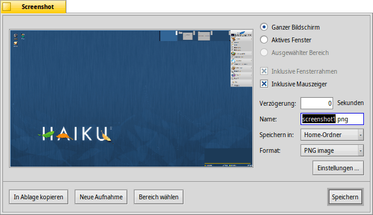

Screenshot
Screenshot
| Deskbar: | ||
| Ort: | /boot/system/apps/Screenshot /bin/screenshot | |
| Einstellungen: | ~/config/settings/screenshot |
Bildschirmfotos können entweder mittels der Taste DRUCK oder durch Start der Anwendung Screenshot geschossen werden.

Rechts neben der Vorschau kann man ganz oben zwischen verschiedenen Modi und Optionen wechseln:
Entweder , oder nur (falls es eins gibt, zum Zeitpunkt der Bildschirmaufnahme). Falls man nur einen Ausschnitt des Bildschirms speichern, klickt man auf unter der Vorschau (siehe weiter unten). Wurde ein Ausschnitt gewählt, wird der Modus anklickbar und man kann nun zwischen , und wechseln.
Neben diesen Modi lassen sich Bildschirmfotos mit den Optionen und aufnehmen.
Darunter kann Name, Format und Speicherort festgelegt werden, mit dem der Screenshot gespeichert wird, wenn auf geklickt wird. Anstatt eine Datei auf die Platte zu speichern, kann man per auch einfach nur die Ablage benutzen und das Bild von dort direkt in eine andere Anwendung einfügen. schießt ein neues Bildschirmfoto.
Die folgenden Tastaturkürzel sind möglich, da alle Einstellungen für den nächsten Screenshot beibehalten werden:
| DRUCK | Schießt ein Bildschirmfoto ohne Verzögerung und öffnet das Screenshot Fenster. | |
| SHIFT DRUCK | Schießt ein Bildschirmfoto "heimlich" (ohne das Screenshot Fenster zu öffnen), aber mit allen beim letzten Mal getroffenen Einstellungen. | |
| STRG DRUCK | Schießt auch ein "heimliches" Bildschirmfoto mit den letzten Einstellungen, speichert es jedoch nicht ab, sondern kopiert es nur in die Ablage. | |
| OPT DRUCK | Schießt ein Bildschirmfoto ohne Verzögerung und wechselt gleich in den "Bereichs-Modus". |
 Bereich auswählen
Bereich auswählen
Bei einem Klick auf wird das Fenster der Screenshot Anwendung ausgeblendet und man sieht den kompletten Bildschirm, leicht abgedunkelt.

Nun lässt sich ein Auswahlkasten aufziehen, der den Ausschnitt entsprechend hervorhebt. Macht man das mit der linken Maustaste, wird die Auswahl direkt angewendet sobald man den Finger von der Maustaste nimmt, und das Screenshot Fenster erscheint wieder.
Erstellt man den Auswahlkasten bei gedrückter SHIFT-Taste oder mit der rechten Maustaste, befinden sich in den Ecken Griffe, mit denen die Größe der Auswahl geändert werden kann. Außerdem lässt sich die Auswahl verschieben.
Die Auswahl wird per Doppelklick oder mittels RETURN übernommen.
ESC bricht den Auswahlprozess ab.
Screenshots aus dem Terminal
Eine spezielle screenshot Anwendung ist für den Einsatz im Terminal oder einem Skript gedacht.
screenshot --help zeigt die vertrauten Optionen als Parameter:
~> screenshot --help
screenshot [OPTION] [FILE] Erstellt einen Screenshot vom aktuellen Bildschirminhalt
FILE ist der optionale Ausgabepfad und Dateiname, der im "silent" Modus benutzt wird.
Existiert bereits eine Datei mit diesen Namen, wird sie ohne Warnung überschrieben. Wird
FILE nicht angegeben, wird der Screenshot mit dem Standardnamen im Home Verzeichnis
des Benutzers gespeichert.
OPTION
-m, --mouse Nimmt den Mauszeiger mit auf
-b, --border Nimmt den Fensterrahmen mit auf
-w, --window Aufnahme des aktiven Fensters statt des gesamten Bildschirminhalts
-d, --delay=seconds Aufnahmeverzögerung [in Sekunden]
-s, --silent Macht den Screenshot, ohne das Anwendungsfenster zu öffnen
-f, --format=image Legt das Bildformat fest
[bmp], [gif], [jpg], [png], [ppm], [tga], [tif]
-c, --clipboard Kopiert den Screenshot in die System-Ablage ohne das
Anwendungsfenster zu öffnen
-a, --area Um einen Bereich für die Aufnahme auszuwählen
Achtung:
Option -b, --border funktioniert nur zusammen mit -w, --window
Option -a, --area funktioniert nicht mit -s, --silent oder -c, --clipboard